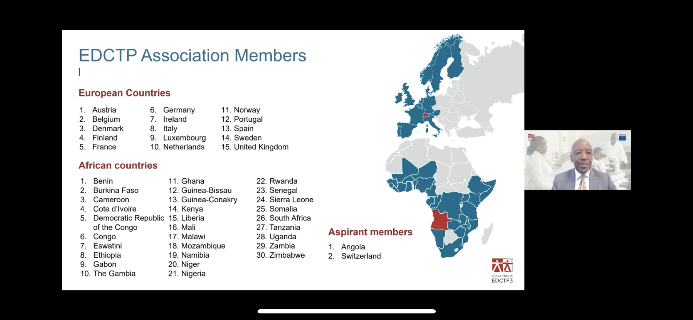
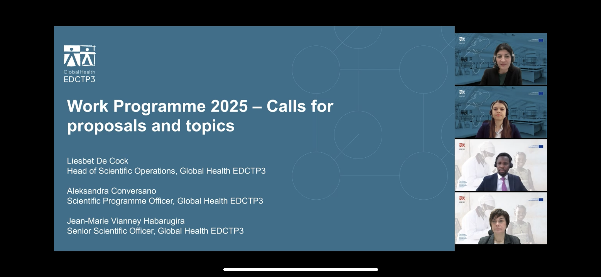
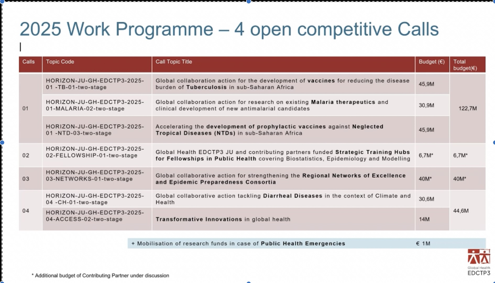
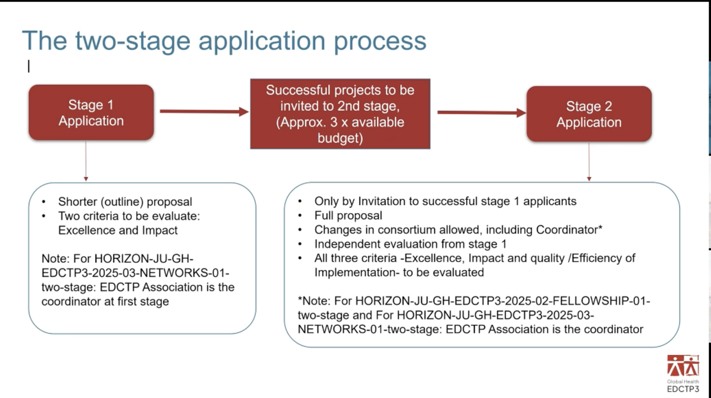
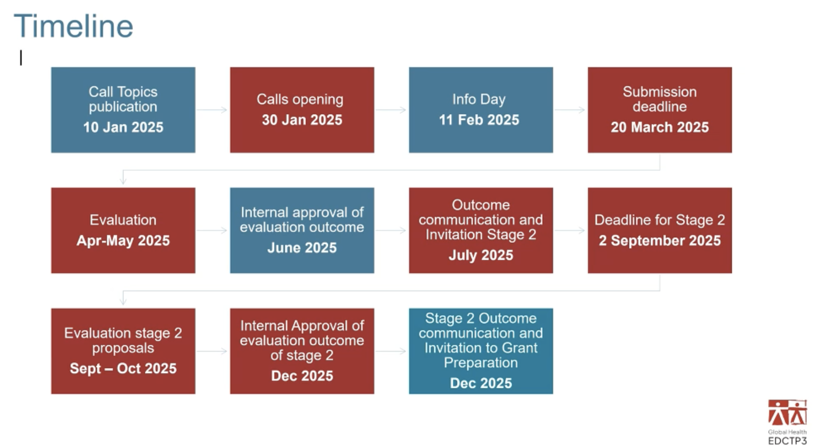

What it is
- European & Developing Countries Clinical Trials Partnership (EDCTP) > EDCTP) is a public-public partnership between countries in Europe and sub-Saharan Africa, supported by the European Union.
It is supported by the European Union and aims to accelerate the development of new or improved drugs, vaccines, microbicides and diagnostics against HIV/AIDS, tuberculosis and malaria as well as other poverty-related and neglected infectious diseases in sub-Saharan Africa, with a focus on phase II and III clinical trials.
It has 45 members (30 African and 15 European countries) & 305 participating entities from 56 countries

Occasion
Global Health EDCTP3 Info Day 2025, took place on 11 February from 09:00 to 12:30, Brussels time, to discuss the upcoming EDCTP3 programme.

Calls for proposals
+Budget: 45.9 M€ …malaria, tuberculosis, and neglected tropical diseases (NTDs), fellowship programs in AFRICA …

Horizon-JU-GH-EDCTP3-2025-01-TB-01-two-stage
Horizon-JU-GH-EDCTP3-2025-01-MALARIA-02-two-stage
Horizon-JU-GH-EDCTP3-2025-01-NTD-03-two-stage
+Budget: 45.9 M€ neglected tropical diseases (NTDs)
Horizon-JU-GH-EDCTP3-2025-02-FELLOWSHIP-01-two-stage
Horizon-JU-GH-EDCTP3-2025-02-NETWORKS-01-two-stage
Horizon-JU-GH-EDCTP3-2025-02-CH-01-two-stage
Tackling diarrhoeal diseases in the context of climate and health +Budget: 30.6 M€
Horizon-JU-GH-EDCTP3-2025-02-ACCESS-02-two-stage
Application process for the calls


Riferimenti/rinvii
“Sviluppo”
«Perfezionamento, miglioramento, progresso verso un superiore livello tecnico o metodologico, qualitativo, estetico o stilistico in un determinato ambito pratico o intellettuale. […] Incremento, potenziamento di un’attività industriale, terziaria, agricola, di una produzione o più genericamente di un sistema economico. […] Processo di crescita verso la piena maturità psicofisica, mentale, sessuale; irrobustimento del fisico, di una parte del corpo. […] Processo di crescita fino alla compiuta formazione di un organo o di un organismo animale o vegetale. […] » [@garbini_uscire_2003. p. 80]
Etimologia
Entrato nella lingua italiana nel XVIII secolo (forse dall’Inglese o dal Francese), il termine sviluppo trova la sua origine nel latino tardo (X sec.) falŭppa definito “scarti di paglia minutissimi o ramoscelli minuti” incrociatosi con un derivativo del verbo volvere “avviluppare” e successivamente accresciuto dal prefisso estrattivo-durativo [@garbini_uscire_2003. p. 80]. ## SVILUPPO ECONOMICO «La nozione di sviluppo [economico sostenibile], concetto maggiore e di marca Onu di metà XX secolo, è una parola chiave sulla quale si sono incontrate tutte le vulgate politico-ideologiche dei decenni Cinquanta e Sessanta. Ma è stata veramente pensata? [@garbini_uscire_2003. p. 81].
“Sviluppo (economico) sostenibile”

Da dove viene l’idea?
Nel 1972, la conferenza ONU sull’ “Ambiente Umano” (Stoccolma, 5-16 giugno 1972) è considerata la prima in cui (almeno tra i paesi presenti) si prende in considerazione il problema della conservazione dell’ambiente e della gestione delle risrse naturali come questione fondamentale. La conferenza promulga una Dichiarazione della Conferenza delle Nazioni Unite sull’ambiente umano con 7 proclami e 26 Principi, ed anche un “Action Plan” completo di 109 raccomandazioni. [@un_report_1972-1] (Da notare questa frase, ora un po’ in disuso: “ambiente umano”/“human environment”)
Qualche stralcio:
Proclaim 5: “The natural growth of population continuously presents problems for the preservation of the environment, and adequate policies and measures should be adopted, as appropriate, to face this problems. Of all things in the world, people are the most precious.”
Principle 2: The natural resources of the earth, including the air, water, land, flora and fauna and especially representative samples of natural ecosustems, must be safeguarded for the benefit of present and future generations through careful planning or management
Principle 3: The capacity of the earth to produce vital renewable resources must be maintained and, wherever practicable, restored or improved.
(controversa la discussione se la crescita demografica sia un problema o no ma questo finisce nei Principi e nelle Raccomandazioni)
Principle 16: Demographic policies which are without prejudice to basic human rights and which are deemed appropriate by Governments concerned should be applied in those regions where the rate of population growth or excessive population concentration are likely to have adverse effects on the environment of the human environment and impede development
Recommendation 12: I. It is recommended that the World Health Organization and other United Nations agencies should provide increased assistance to Governments which so request in the field of family planning programmes without delay. 2. It is further recommended that the World Health Organization should promote and intensify research endeavor in the field of human reproduction, so that the serious consequences of population explosion on human environment can be prevented.
Conclusions: 48. Many speakers, from both developing and developed countries, agreed that the ruthless pursuit of gross national product, without consideration for other factors, produced conditions of life that were an affront to the dignity of man. The requirements of clean air, water, shelter and health were undeniable needs and rights of man.
(I sommario della discussione menziona la popolazione al paragrafo 57)
- [Population] Several speakers expressed regret that population problems took so minor a place in the agenda of the Conference. They argued that all strategies for development and environment would be fatally damaged unless the rate of population increase was reduced. Other speakers said that the population increase was not the problem; the real challenge was the fact that so large a number of the people of the world had such a small expectation for a fruitful, happy and long life. In the opinion of certain delegations there was no incompatibility between population growth and preservation of the environment.
Come è definito il concetto di “sviluppo sostenibile”?
Il concetto di “sviluppo sostenibile” appare per la prima volta nel 1987, nel cosiddetto rapporto Brundtland del 1987 presentato alla Commissione mondiale per l’ambiente e lo sviluppo denominato anche “Our Common Future” guidata da Gro Harlem Brundtland. Qui si menzionano:
- uno sviluppo che deve avere dei limiti;
Humanity has the ability to make development sustainable to ensure that it meets the needs of the present without compromising the ability of future generations to meet their own needs.
The concept of sustainable development does imply limits - not absolute limits but limitations imposed by the present state of technology and social organization on environmental resources and by the ability of the biosphere to absorb the effects of human activities. [@world_commission_on_environment_and_development_brundtal_1987, p. 16]
- uno sviluppo che adotta stili di vita diversi in base alla ricchezza del paese;
Sustainable global development requires that those who are more affluent adopt life-styles within the planet’s ecological means - in their use of energy, for example. Further, rapidly growing populations can increase the pressure on resources and slow any rise in livingstandards; thus sustainable development can only be pursued if population size and growth are in harmony with the changing productive potential of the ecosystem. [@world_commission_on_environment_and_development_brundtal_1987, p. 17]
- uno sviluppo che considera il futuro oltre al presente;
sustainable development is not a fixed state of harmony, but rather a process of change in which the exploitation of resources, the direction of investments, the orientation of technological development, and institutional change are made consistent with future as well as present needs. [@world_commission_on_environment_and_development_brundtal_1987, p. 17]
- uno sviluppo che considera “poggia” su precisi indirizzi politici;
We do not pretend that the process is easy or straightforward. Painful choices have to be made. Thus, in the final analysis, sustainable development must rest on political will. [@world_commission_on_environment_and_development_brundtal_1987, p. 17]
- la crescita della popolazione e’ superiore alle risorse disponibili;
The issue is not just numbers of people, but how those numbers relate to available resources. Thus the ‘population problem’ must be dealt with in part by efforts to eliminate mass poverty, in order to assure more equitable access to resources, and by education to improve human potential to manage those resources. Urgent steps are needed to limit extreme rates of population growth… providing people with facilities and education that allow them to choose the size of their families is a way of assuring - especially for women - the basic human right of self-determination. [@world_commission_on_environment_and_development_brundtal_1987, p. 18]
- la crescita della popolazione e’ un problema IN CERTI LUOGHI;
Our human world of 5 billion must make room in a finite environment for another human world. The population could stabilize at between 8 and 14 billion sometime next century, according to UN projections. More than 90 per cent of the increase will occur in the poorest countries, and 90 per cent of that growth in already bursting cities.[@world_commission_on_environment_and_development_brundtal_1987, p. 13]
Da allora, lo sviluppo sostenibile è emerso come un’idea centrale nella teoria e nelle politiche dello sviluppo internazionale. Tuttavia, alcuni esperti hanno criticato alcuni aspetti del concetto, tra cui:
- La sua generalità o vaghezza, che ha dato luogo a un ampio dibattito su quali forme o aspetti dello sviluppo possano essere considerati “sostenibili”
- L’assenza di obiettivi quantificabili o misurabili in modo oggettivo
- L’assunzione dell’inevitabilità e della desiderabilità dell’industrializzazione e dello sviluppo economico
- L’impossibilità di stabilire dove poggiare, in ultima istanza, la priorità: se sui bisogni umani ovvero sugli impegni ambientali, entrambi ragionevolmente considerabili importanti in determinate circostanze.
Quali riduzioni/deviazioni si osservano?
Intrinseca contraddizione tra le componenti che farebbero parte dello “sviluppo sostenibile”. Un inserto dell’Economist di qualche anno fa diceva che ESG mette insieme 3 concetti disparati e (potenzialmente) in contraddizione [@the_economist_esg_2022]
Visione riduttiva di un concetto complesso e multidimensionale che tradisce, ad esempio, un’idea intrinseca dello sviluppo sostenibile come (non sacrificare il benessere delle generazioni future). Uno strumento che avrebbe potuto informare decisioni tecniche come il Life cycle assessment (LCA) non ha, a mio parere, ricevuto l’attenzione che meritava.
Sforamento delle competenze decisionali senza quelle tecniche. C’è un problema legato all’esagerato ruolo decisionale in ambiti tecnici che viene spesso (auto)attribuita ad organi di indirizzo politico. Come possono organi consultivi/burocratici dare direttive tecniche (con tanto di scadenze e tabelle di marcia) su temi sui quali non sono d’accordo nemmeno gli scienziati specialisti?
- Esempio: direttive europee che impongono la sostituzione di fonti rinnovabili alla quasi totalità delle fonti energetiche, invece che lasciare che il mercato decida il mix energetico migliore. Direttive che si sono per altro rivelate nefaste alla luce della crisi energetica che ha colpito l’Europa nel 2022, e che non tenevano conto di aspetti tecnici come la densità energetica delle diverse fonti, o la disponibilità di queste ultime.
- Senza contare che la ricerca sull’energia nucleare è stata arbitrariamente bloccata, nonostante sia una delle fonti energetiche piu’ sicure e pulite.
- Esempio: direttive europee che impongono la sostituzione di fonti rinnovabili alla quasi totalità delle fonti energetiche, invece che lasciare che il mercato decida il mix energetico migliore. Direttive che si sono per altro rivelate nefaste alla luce della crisi energetica che ha colpito l’Europa nel 2022, e che non tenevano conto di aspetti tecnici come la densità energetica delle diverse fonti, o la disponibilità di queste ultime.
Con quali conseguenze?
Bibliografia
Definizioni importanti
- SVILUPPO (ECONOMICO) SOSTENIBILE: questo concetto, che adesso sentiamo in continuazione, in realtà viene espresso per la prima volta nel 1987, nel cosiddetto rapporto Brundtland presentato alla Commissione mondiale per l’ambiente e lo sviluppo denominato anche “Our Common Future” guidata da Gro Harlem Brundtland.1
DEFINIZIONE: “uno sviluppo che soddisfi i bisogni del presente senza compromettere la capacità delle generazioni future di soddisfare i propri bisogni” (Brundtland, 1987).
Da un lato presuppone uno sguardo positivo che considera le generazioni future e si impegna alla conservazione delle risorse, il che è giusto, perchè prima si vedeva la crescita economica come qualcosa di continuo e illimitato.
D’altra parte, questo documento (e altri attinenti) include anche l’idea che la crescita della popolazione (almeno in certi luoghi) sia superiore alle risorse disponibili… quindi invita i governi (più o meno implicitamente) a limitare la crescita demografica. Qualcosa che contraddice la concezione cristiana di sviluppo che mette l’uomo al centro. Qui sotto le testuali parole:
“Urgent steps are needed to limit extreme rates of population growth. (…) But this is not just a demographic issue; providing people with facilities and education that allow them to choose the size of their families is a way of assuring - especially for women - the basic human right of self-determination.” [@world_commission_on_environment_and_development_brundtal_1987, p. 18]
- MITIGAZIONE dei cambiamenti climatici presuppone che: 1) abbiamo capito esattamente quali sono le cause e 2) è in nostro potere fare qualcosa per ridurli. Due cose che però non sono affatto dimostrate. ESEMPI:
- Riduzione delle emissioni di gas serra (GHG) per rallentare il riscaldamento globale.
- Sempre per ridurre le emissioni di gas serra, sostituire le fonti energetiche fossili (efficienti e accumulabili) con fonti rinnovabili (intermittenti e difficili da stoccare e trasportare e quindi costosissime).
- Sostituire i mezzi di trasporto a combustione interna con elettrici (che però hanno pur con ridotte emissioni hanno un impatto ambientale maggiore, se consideriamo l’intero ciclo di vita del veicolo).
- ADATTAMENTO ai cambiamenti climatici presuppone che: 1) i cambiamenti climatici siano in corso e 2) non possiamo fare nulla per ridurli, ma possiamo investire risorse per prevedere ed difenderci dai rischi. ESEMPI:
- Gestire boschi e foreste con manutenzione e pulizia
- Gestire il rischio idrogeologico (siccità, esondazioni e frane) con opere di ingegneria civile e idraulica
- Pianificare la città in modo da ridurre il rischio di inondazioni.
- Sfruttare le risorse naturali in modo sostenibile (utilizzo e ri-utilizzo di acqua depurata, rigenerazione falde acquifere), limitazione della urbanizzazione e impermeabilizzazzione del suolo.
- Investire nella manutenzione ordinaria e straordinaria delle infrastrutture vulnerabili per via del cambiamento climatico e delle calamità naturali. Cosi tra l’altro si spende solo una frazione di quello che costa la ricostruzione post-disastro.
- L’accecamento ideologico in atto (almeno nella UE) fa si che ci sia un’accanimento solo sulla riduzione della CO2 (che per altro è necessaria alla vita e su cui l’impatto umano è molto ridotto) mentre vengono trascurati gli interventi concreti che invece potrebbero fare la differenza: ridurre l’inquinamento, (ri)utilizzare meglio le risorse (l’acqua, i terreni, le aree verdi) e investire in opere civili di protezione di coste, fiumi, città, ecc.
- Per altro, vista l’ossessione per la CO2, non si capisce perchè la ricerca sulla generazione di energia nucleare sia bloccata da noi, quando questa forma di energia sarebbe la piu pulita, e (grazie agli sviluppi recenti) sempre più sicura…
Contro il catastrofismo climatico
L’origine antropica del riscaldamento globale è una congettura non dimostrata (il nesso lineare maggiore CO2 nell’atmosfera = innalzamento temperatura è troppo semplicistico e non tiene conto della complessita del fenomeno climatico). Questa Dichiarazione di scienziati critici fa capire molto bene la questione.
Vedi anche Clintel: un’associazione di scienziati che contestano la visione catastrofista del riscaldamento globale. CLINTEL sito
Vedi anche NIPCC: un’associazione NON Governativa di scienziati che si dissociano dalle pubblicazioni di IPCC (il panel sul clima dell’ONU) in quanto NON indipendente da politica e ideologia e che NON rappresenta davvero le idee (peraltro ancora dibattute) della maggior parte degli scienziati. Come NIPCC descrive IPCC e le sue pubblicazioni. Da notare che:
“The IPCC’s periodic reports do not reflect the views of most climate scientists. The Summaries for Policymakers are extensively revised and rewritten after scientists themselves have written and approved the summaries. These summaries systematically exclude expressions of scientific uncertainty that appear in the full reports and exaggerate the possibility of dangerous climate change.”
Intervista a Mario Giaccio che descrive interessi finanziari dietro alla transizione green [@battaglia_macche_2022]. Articolo in PDF
Intervista a Maurizio Masi che spiega molto bene l’indice LCA (Life Cycle Assessment) [@dragoni_il_2022]. Articolo in PDF
LCA (Life Cycle Assessment) ci dice quante risorse un prodotto ha consumato dalla sua origine fino alla sua morte in termini di non solo per CO2, ma anche acqua, terreno, energia. Esempio: un motore a combustione interna ha una alto impatto in termini di emissioni di CO2, ma se consideriamo l’intero ciclo di vita di un’auto elettrica, le emissioni saranno ridotte, ma cosa accade al resto? Quanta terra va scavata per avere i metalli e le terre rare che servono per produrre batterie? (tonnellate per poche decine di grammi) Quanta acqua serve per produrre un’auto elettrica? Un legislatore serio dovrebbe decidere quali tecnologie spingere (con leggi, sussidi, ecc) solo dopo aver calcolato questo indice LCA.
Approcci “sostenibili” da valorizzare
Proposte in positivo: riutilizzo delle acque per vari usi (non potabili). [@franco_siccita_2022]. Link Articolo
Ridurre le perdite idriche nelle reti di distribuzione: in Italia disperdiamo oltre il 40% dell’acqua potabile per via di inefficienze e problemi vai della rete di distribuzione! Questo è uno spreco enorme non solo di acqua ma anche di energia Link ISTAT
Vari esempi di “economia circolare” che sostituisce un “circolo” di riparazione, riuso, rigenerazione di una risorsa all’approccio produco-uso-scarto.
Lo ha detto la scienza !?
Occorre sempre ricordare che la scienza non procede per dogmi, ma è fatta di dibattiti, di tesi e antitesi, di prove e controprove. E’ un processo continuo di verifica e falsificazione delle ipotesi. Qui due esempi molto chiari:
Lettera del Prof. Uberto Crescenti al Papa Francesco in cui contro-argomentava alcuni passaggi della “Laudato si”, allineati acriticamente ai documenti dell’IPCC [@crescenti_lettera_2015]. Articolo in PDF
Intervista al Prof. Franco Prodi che descrive come il metodo scientifico non è rispettato da chi promuove le teorie dominanti sul cambiamento climatico [@prodi_sul_2022]. Articolo in PDF
Cos’è uno slogan?
[@fioravanti_pedagogia_2006, p. 209]
“liberta’, uguaglianza, fraternita” (rivoluzione francese)
pericoli
slogan ha funzione positiva semplificativa nella diffusione di concetti difficili ma anche il pericolo di trasmettere forme di pensiero pre-elaborato, e attribuire etichette a carattere ideologico
Language plays a central role in this form of warfare, as it is used to spread propaganda, create division, and exploit vulnerabilities in people’s cognitive biases.
Slogan / tormentoni incontrati nel mio lavoro
“Sustainable development”
- Lezione appresa: il ritorno alla fonte, origine di una parola o di una espressione, consente di disporre di un valido aiuto per scoprire i principi e i riferimenti che sono alla base di quanto si trova intorno a nio, in modo da individuare le loro radici, le origini, o anche la semplice provenienza, comprenderli a fondo e confrontarli con a realtà. [@fioravanti_pedagogia_2006, p. 207]
(anche “artificial intelligence” era un esempio interessante)
“Cambiamento climatico” “global warming”
mitigazione = Ridurre le cause del cambiamento climatico, ovvero le emissioni di gas serra nell’atmosfera che sono ritenute responsabili del riscaldamento globale2. (transizione verso fonti rinnovabili, efficienza energetica, riforestazione, cattura CO2)
adattamento = Gestire gli effetti del cambiamento climatico, in particolare i danni causati da eventi metereologici estremi (infrastrutture resistenti, agricoltura adattiva, gestione delle risorse idriche, pianificazione urbana migliore in zone a rischio)
Dal momento che il consenso sulle cause antropogeniche del cambiamento climatico e sulla nostra capacità di mitigarlo è tutt’altro che unanime. Io ho studiato abbastanza statistica per capire che stabilire un nesso causale LINEARE (gas serra- temperatura) è molto più complesso di quanto si possa pensare, soprattutto quando voglio spiegare un fenomeno che dipende da piu variabili, tra cui alcune latenti3 e non osservabili (cicli solari, variazioni orbitali, eruzoni vulcaniche, nuvole,) dati incompleti non rappresentativi per fenomeni ciclici che si verificano su scala temporale molto lunga. Di fatto i modelli di simulazione della “greenhouse theory” non hanno replicato i cambi climatici del passato.
Lezione appresa:
- spacchettare un termine complesso per discernere parti che condivido o meno
- ma il compito degli istituzioni di indirizzo politico (e degli investimenti pubblici) e’ buttarsi a capofitto su una impresa fuori dalla nostra portata e con strumenti (forse) inadeguati o dedicarsi a problemi piu concreti per cui abbiamo mezzi per misurare e intervenire efficacemente?
“ESG”
- gusti
- opinioni = sospensione del giudizio per mancanza di elementi certi (ergo ognuno ha le sue e non sono da rispettare perché non hanno consistenza tale da accrescere la conoscenza – si rispettano le persone)
- valori = cio che si ritiene vero, buono e bello secondo un giudizio personale più o meno in accordo con quello della società in cui si vive. SONO LEGATI AL SOGGETTIVISMO PIU’ IRRIDUCIBILE, quello che finisce con eludere l’esisenza stessa di principi. [@fioravanti_pedagogia_2006, p. 197]
- Lezione appresa: L’attuazione di un valore esclude quella di un altro (giustizia e misericordia, bene particolare e bene comune) e si deve fare una scelta: qual è il criterio per la scelta?
I valori (che hanno un vincolo affettivo) non sono elementi passibili d’educazione come le qualita umane, perché rimangono sempre esterni alla natura umana
che guida la mia azione?
Il ruolo della scorciatoia mentale (e linguistica)
Non c’e’ da stupirsi che la comunicazione politica e commerciale si basi su slogan e frasi fatte. Del resto, noi umani siamo fatti per risparmiare energia mentale e perciò cerchiamo di fare il meno sforzo possibile.
Inserire le parole in un contesto
Dalle parole alle azioni
[…] si deve fare i conti con la “mistica del metodo” […] : messi al bando i grandi perché della vita umana, tutti gli sforzi si concentrano sulle metodologie di ogni tipo e genere, e sulla idolatria della sperimentazione, quasi da essa possa arrivare la soluzione di ogni problema. Si moltiplicano quindi gli strumenti […], i quali però, quando utilizzati senza riferimento ai principi, rischiamo di limitare l’ambito di azione a settori sperimentali sempre più ristretti e sconnessi da una prospettiva unitaria. La prospettiva cambia radicalmente quando si antepone i principi al metodo [@fioravanti_pedagogia_2006, p. 197]

- i principi sono sempre pochi e rappresentano il vertice di qualsiasi attivita unmana, la guidano e la orientano. Tutto dipende da essi che sono il criterio di discernimento e di giudizio.
- dopo aver individuato i principi, occorre esaminare i fini e gli ideali che possono essere legittimamente perseguiti a partire da essi. (fanno diventare operativi i principi)
- a seguire si passa agli obiettivi, che conferiscono concretezza agli elementi precedenti (ne sono “porzioni operative”)
- metodi = dall’etimologia greca (
μέθοδος):μετά(metá) = “oltre”/“dopo” +ὁδός(hodós) = “via”/“percorso” = “via per arrivare a un fine”. Possono esserci molti metodi per arrivare a un obiettivo. - Uno stesso metodi (una via) ammette una pluralita di tecniche = modalita operativa organizzata
- Da ultimo ci sono gli strumenti, virtualmente illimitati, che non devono pero’ mai diventare fine a se stessi.
“Conceptual framing” (la cornice concettuale)
“The FDA has approved a new drug that will save millions of lives.”
Esempio di notizia da FDA
Buone notizie
- cuore: abbiamo in dotazione uno strumento infallibile per distinguere il vero dal falso, il giusto dall’ingiusto, il bello dal brutto
- Giussani
- Ratzinger
- Moro e il linguaggio universale
PPP
giudizio e lavoro
Cura delle parole e del lessico
We need:
- media literacy
- critical thinking skills
- a deep understanding of how language works, how it can be used to manipulate, and how to resist such manipulation.
Or, the way I see it:
- Giudicare le idee facendosi domande // habit of critical thinking / curiosity
- Ma proprio proprio questa parola cosa vuol dire?
- Ma questa idea da dove arriva (e come si è trasformata e/o deviata)?
- Esempi: “sviluppo sostenibile” in Our common good
- Confrontarsi con le idee altrui e ascoltare le ragioni di chi la pensa diversamente
- Connettere i puntini
- Esempi…
- Diventare consapevoli della cornice valoriale usata nella comuncazione
- Esempi…
For example, describing a government program as “tax cuts for the wealthy” versus “incentives for job creators” evokes vastly different responses, even though the underlying policy is the same.
Il realismo
- Il primato della realtà ( ≈ ascoltare la voce di chi è piu vicino alla realta )
L’azione (nel nostro metro quadrato)
- Lanciarsi nell’azioni (politiche, proposte, programmi, leggi) dopo aver esplicitato quello che ci guida
- Cercare di identificare i “first principles” che ispirano un’azione e verificare (va da se)
- e io li condivido Questa proposta/intervento/programma chi avvantaggia?
- “Qui prodest”?
- follow the money
Gli altri
“ragioni dietro gli alti prezzi dell’energia in Europa:
- al di là del fatto che l’Ue non sia un grande produttore di gas naturale.
- la limitata coordinazione degli acquisti nazionali di gas,
- il funzionamento del mercato energetico,
- i ritardi nell’installazione della capacità rinnovabile,
- le reti poco sviluppate,
- l’elevata tassazione e gli alti margini finanziari.
Tutti questi fattori sono il risultato delle nostre stesse decisioni, e quindi possono essere modificati se abbiamo la volontà di farlo.”
“il rapporto affronta diverse vulnerabilità dell’Europa, una delle quali è il nostro sistema di difesa. La frammentazione della capacità industriale lungo linee nazionali impedisce di raggiungere la scala necessaria. Anche se collettivamente siamo il terzo maggiore investitore in difesa al mondo, non saremmo in grado di soddisfare un aumento della spesa per la difesa attraverso la nostra stessa capacità produttiva. I nostri sistemi di difesa nazionali non sono né interoperabili né standardizzati in alcune parti chiave della catena di approvvigionamento. Questo è uno dei tanti esempi in cui l’Unione Europea è meno della somma delle sue parti.”
Footnotes
variabili latenti = Sono concetti teorici non direttamente osservabili, ma inferibili da altre variabili misurate (indicatori). Es. intelligenza variabile latente di abilita.↩︎
“The total projected human addition to the carbon budget is about 5% (Energy Information Administration, 1998), of which industrialized world contribution is about 60%.” [@gerhard_climate_2004]↩︎
variabili latenti = Sono concetti teorici non direttamente osservabili, ma inferibili da altre variabili misurate (indicatori). Es. intelligenza variabile latente di abilita.↩︎